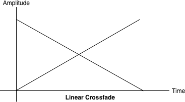

Once we are ready to play a sound, whether from an
AudioBuffer or from other sources, one of the most basic
parameters we can change is the loudness of the sound.
The main way to affect the loudness of a sound is using
GainNodes. As previously mentioned, these nodes have a gain
parameter, which acts as a multiplier on the incoming sound buffer. The
default gain value is one, which means that the input sound is unaffected.
Values between zero and one reduce the loudness, and values greater than one
amplify the loudness. Negative gain (values less than zero) inverts the
waveform (i.e., the amplitude is flipped).
Equal Power Crossfading
Often in a game setting, you have a situation where you want to
crossfade between two environments that have different sounds associated
with them. However, when to crossfade and by how much is not known in
advance; perhaps it varies with the position of the game avatar, which is
controlled by the player. In this case, we cannot do an automatic
ramp.
In general, doing a straightforward, linear fade will result in the
following graph. It can sound unbalanced because of a volume dip between
the two samples, as shown in Figure 3-2.
Figure 3-2. A linear crossfade between two tracks
To address this issue, we use an equal power curve, in which the
corresponding gain curves are neither linear nor exponential, and
intersect at a higher amplitude (Figure 3-3). This helps
avoid a dip in volume in the middle part of the crossfade, when both
sounds are mixed together equally.
Figure 3-3. An equal power crossfade sounds much better
The graph in Figure 3-3 can be generated with a bit of
math:
functionequalPowerCrossfade(percent){// Use an equal-power crossfading curve:vargain1=Math.cos(percent*0.5*Math.PI);vargain2=Math.cos((1.0-percent)*0.5*Math.PI);this.ctl1.gainNode.gain.value=gain1;this.ctl2.gainNode.gain.value=gain2;}
Since multiple sounds playing simultaneously are additive with no
level reduction, you may find yourself in a situation where you are
exceeding past the threshold of your speaker’s capability. The maximum
level of sound is 0 dBFS, or 216, for 16-bit
audio. In the floating point version of the signal, these bit values are
mapped to [−1, 1]. The waveform of a sound that’s being clipped looks
something like Figure 3-5. In the context of the Web Audio
API, sounds clip if the values sent to the destination node lie outside of
the range. It’s a good idea to leave some room (called
headroom) in your final mix so that you aren’t too
close to the clipping threshold.
Figure 3-5. A diagram of a waveform being clipped
In addition to close listening, you can check whether or not you are
clipping your sound programmatically by putting a script processor node
into your audio graph. Clipping may occur if any of the PCM values are out
of the acceptable range. In this sample, we check both left and right
channels for clipping, and if clipping is detected, save the last clipping
time:
functiononProcess(e){varleftBuffer=e.inputBuffer.getChannelData(0);varrightBuffer=e.inputBuffer.getChannelData(1);checkClipping(leftBuffer);checkClipping(rightBuffer);}functioncheckClipping(buffer){varisClipping=false;// Iterate through buffer to check if any of the |values| exceeds 1.for(vari=0;i<buffer.length;i++){varabsValue=Math.abs(buffer[i]);if(absValue>=1.0){isClipping=true;break;}}this.isClipping=isClipping;if(isClipping){lastClipTime=newDate();}}
An alternative implementation of metering could poll a real-time
analyzer in the audio graph for getFloatFrequencyData at
render time, as determined by requestAnimationFrame (see
Analysis and Visualization). This approach is more efficient, but misses a
lot of the signal (including places where it potentially clips), since
rendering happens most at 60 times a second, whereas the audio signal
changes far more quickly.
The way to prevent clipping is to reduce the overall level of the
signal. If you are clipping, apply some fractional gain on a master audio
gain node to subdue your mix to a level that prevents clipping. In
general, you should tweak gains to anticipate the worst case, but getting
this right is more of an art than a science. In practice, since the sounds
playing in your game or interactive application may depend on a huge
variety of factors that are decided at runtime, it can be difficult to
pick the master gain value that prevents clipping in all cases. For this
unpredictable case, look to dynamics compression, which is discussed in
Dynamics Compression.
Dynamics Compression
Compressors are available in the Web Audio API as
DynamicsCompressorNodes. Using moderate amounts of dynamics
compression in your mix is generally a good idea, especially in a game
setting where, as previously discussed, you don’t know exactly what sounds
will play and when. One case where compression should be avoided is when
dealing with painstakingly mastered tracks that have been tuned to sound
“just right” already, which are not being mixed with any other
tracks.
Implementing dynamic compression in the Web Audio API is simply a
matter of including a dynamics compressor node in your audio graph,
generally as the last node before the destination:
The node can be configured with some additional parameters as
described in the theory section, but the defaults are quite good for most
purposes. For more information about configuring the compression curve,
see the Web
Audio API specification.